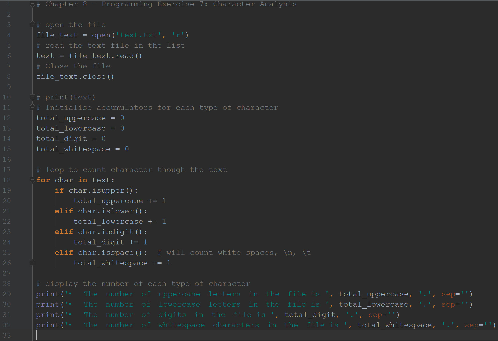
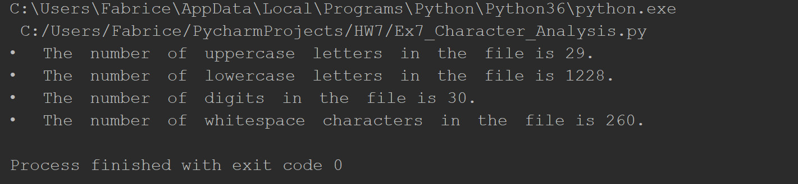

This program reads a .txt file’s contents and determines the following: • The number of uppercase letters in the file • The number of lowercase letters in the file • The number of digits in the file • The number of whitespace characters in the file
A capture of my code:
A capture of the result:
Open the file the program to read.
# open the file
file_text = open('text.txt', 'r')
# read the text file in the list
text = file_text.read()
# Close the file
file_text.close()
Create the variables we will use as accumulators.
# Initialise accumulators for each type of character
total_uppercase = 0
total_lowercase = 0
total_digit = 0
total_whitespace = 0
Use a loop to go through the text.
# loop to count character through the text
for char in text:
if char.isupper():
total_uppercase += 1
elif char.islower():
total_lowercase += 1
elif char.isdigit():
total_digit += 1
elif char.isspace(): # will count white spaces, \n, \t
total_whitespace += 1
The part of the code that display the result.
# display the number of each type of character
print('•The number of uppercase letters in the file is ',total_uppercase,'.', sep='')
print('•The number of lowercase letters in the file is ',total_lowercase,'.', sep='')
print('•The number of digits in the file is ',total_digit,'.', sep='')
print('•The number of whitespace characters in the file is ',total_whitespace,'.', sep='')